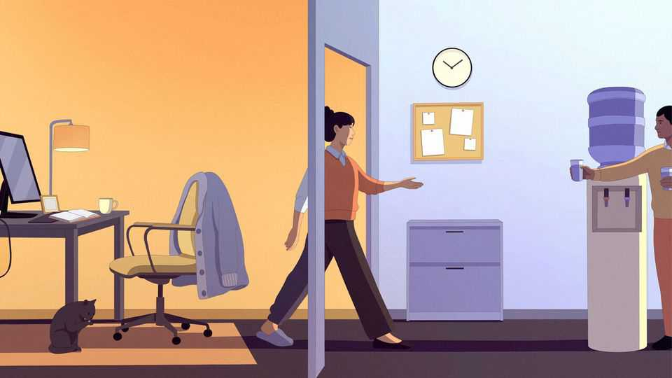

Is it time to end the era of remote work?
A new book makes a case for getting out of your tracksuit and into your officewear

Nov 5th 2026
Those mulling the current AI boom should look back to a kitchen in Google’s office in the early 2000s. Two employees, Noam Shazeer and Georges Harik, began to chat about how computers differentiated between essential and superfluous information. This chance encounter windingly led to the mechanism that underpins large language models.
Had Google allowed remote work, Mr Shazeer and Mr Harik might never have spoken. In-person spitballing has led to ideas ranging from the hugely consequential (IBM’s personal computer) to the hugely entertaining (“Finding Nemo”). That is one reason why bosses often lament the rise of remote work, notes a new book by Natalia Emanuel and Emma Harrington, two economists. In 2019 American workers spent 7% of their paid days working at home. Now it is about a quarter.
Studies suggest that remote work may increase the quantity of output while decreasing its quality. In 2025 a review of return-to-office mandates at large banks found that when firms called analysts back to the office for a few days each week, the accuracy of their earnings forecasts leaped 15% compared with peers at banks that remained fully remote.
What is more, remote work tends to dent the sort of tasks that rarely show up in measures of output. Senior software engineers write more code from the comfort of their homes, but they review junior employees’ work less comprehensively. Lost mentorship and undiscovered ideas can affect the future of a firm.
Such losses may be why the shift has stung new graduates in particular. A new study by Peter John Lambert of the London School of Economics and Yannick Schindler of the University of Oxford suggests remote work, not AI, is to blame for young jobseekers’ woes of late. Jobs done entirely online tend to be susceptible to being done remotely. Firms that are reluctant to let untested employees work away from their boss’s watchful eye may be choosing not to hire them at all.
So why not cancel the corporate Zoom subscription and squeeze back into the cubicle? The authors note that some employees are well-served by remote work: for example, parents and people with disabilities. For most companies a mix is best. To help bosses settle on the right number of days in-office, “In Person” features a “calculator” that asks them to add and subtract days based on the firm’s characteristics. But what executive would not say the stakes of their business are high (add two days), or that innovation is crucial to their firm’s future (add three days)? When it comes to such decisions, psychologists may be more helpful than economists.
Still, many of the book’s points are well-taken. How many days employees spend at the office may be less important than whether they overlap with key colleagues. Hot-desking is a scourge, as would-be collaborators sit together only occasionally. And if bosses want to reap the benefits of in-person culture, they also need to show face. “In Person” should contribute to an ongoing conversation about why remote work has remained so persistent if it comes with so many drawbacks. Watercooler-chat lovers, rejoice. ■